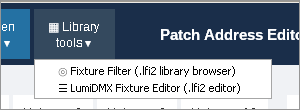
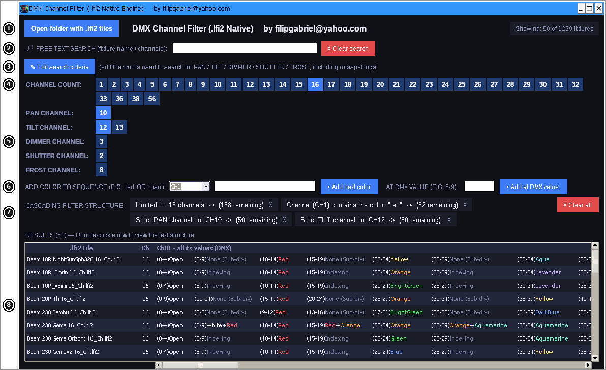
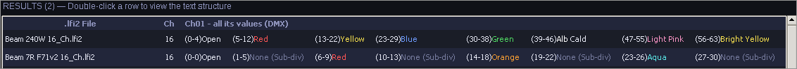
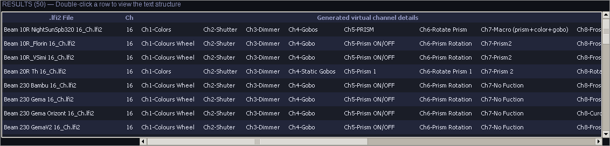
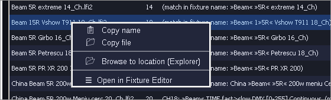

For: Full
Library tools (in +Add Fixture) opens the two tools of the
fixture profiles (.lfi2):

A fixture often has a profile already, under its own name or under the name of another brand that sells the same fixture. The Fixture Filter reads a whole folder of profiles and narrows them down, step by step, to the ones with the channels you look for.

A library of 1239 profiles: 16 channels, red on channel 1, the pan on channel 10 and the tilt on channel 12 leave 50; RESULTS shows channel 1 unfolded on each of them - every value, one under another.
| 1 | Open folder with .lfi2 files - the library: the folder and the folders inside it. On the right: how many profiles are shown, of how many. |
| 2 | FREE TEXT SEARCH - words of the fixture's name or of its channels; the list follows each key. X Clear search empties it. |
| 3 | Edit search criteria - the words by which the pan, tilt, dimmer, shutter
and frost channels are recognised, misspellings included. They are kept in keyword_config.json, next to
the program. |
| 4 | CHANNEL COUNT - only the profiles with that many channels. A click chooses, a second click takes it back. |
| 5 | PAN / TILT / DIMMER / SHUTTER / FROST CHANNEL - only the profiles that have that channel at that place (for example the pan on channel 1). The numbers offered are the ones the profiles left have. |
| 6 | ADD COLOR TO SEQUENCE - a channel and a colour (in English or in Romanian:
red or rosu), then + Add next color: the profiles whose colour channel has that
colour. The next colour on the same channel must come right after it on the wheel - so the colour wheel can be
recognised by its order. AT DMX VALUE - a DMX value or a range of values (7, 6-9), then + Add at DMX value (or Enter): the profiles whose channel gives the colour of the row on every one of those values - one preset, or several next to each other. Only a preset whose only colour is that one counts: Red, Deep red, Red301 are red; White+Red, Red+Green are not. The channel, the colour and the values go in at once: while a value is written in AT DMX VALUE, + Add next color is greyed and cannot be pressed - clear the value to add the colour alone. |
| 7 | CASCADING FILTER STRUCTURE - the filters chosen, in order, each with how many profiles remain after it; the X of a filter takes it out, X Clear all all of them. |
| 8 | RESULTS - the profiles left: the file, the number of channels and the details (below), with the bar that moves the details across. A double click shows the profile as text, with what matched marked. |
What the details of RESULTS show depends on the filters:
The names of colours are written in their colour - in White+Red, White in white and Red in red; Light Pink all pink - and their text stays, so a colour is also known by its name. None (Sub-div) and Indexing are grey. Shutter Open and Shutter Close are written Open and Close. A channel without presets shows (0-255) and its name - the Red channel of an RGB fixture: (0-255)Red.

After CH1 red, red at 6-9 on CH1 leaves 2 profiles: Beam 240W, whose red preset is 5-12, and Beam 7R F71v2, red on 6-9. The profiles whose 6-9 is White+Red are not among them.

Without a colour filter: the channels of each profile, one under another.
The bar under the details is always there; it moves only the details - the file and Ch stay. Its arrows move them a little, a click beside its slider a page; Shift + the mouse wheel over the results does the same.

| Command | What it does |
|---|---|
| Copy name | The name of the profile, to the clipboard. |
| Copy file | The file itself, to the clipboard: Paste in a folder of Explorer puts a copy there - in the folder of a project, for example. |
| Browse to location (Explorer) | Opens its folder in Explorer, with the file selected. |
| Open in Fixture Editor | Opens the profile in the LumiDMX Fixture Editor, with Save grey until a Save As, so that the library's file is not changed by mistake. |
Tip: the library is read once and kept while the program runs. Closing the window only hides it - the list, the filters and the search are there the next time - and when it comes back, only the files that changed, came or went are read again.